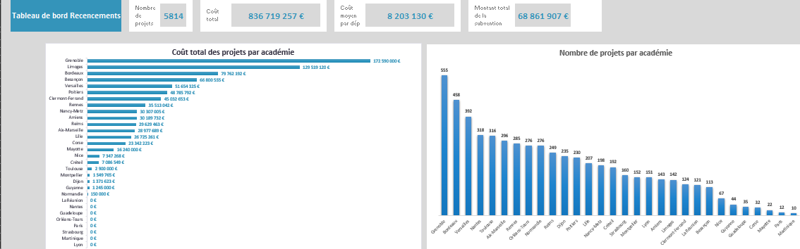

×
Recensement National des Écoles / Consolidation de données
Au début du projet, j'ai rassemblé les bases de données provenant des communautés qui répondaient au courrier adressé par le Ministère de l'Éducation nationale
et le Ministère de la Transition écologique, les invitant à envoyer une liste des écoles nécessitant une rénovation prioritaire selon trois principaux critères :
- Consommation énergétique
- Vétusté
- Évolution pédagogique affectant le bâti
Dans le cadre du Projet de Recensement National des Écoles, mené depuis novembre 2023 avec le Ministère de l'Éducation nationale et de la Jeunesse,
j’ai eu l'opportunité de développer mes compétences en science des données et en gestion de projets.
Ce projet ambitieux visait à recenser les efforts de rénovation des établissements scolaires à travers la France.
En tant que responsable principal du projet au sein de l’équipe Bâti Scolaire, j’ai travaillé en autonomie tout en recevant quelques aides ponctuelles de la part de mes collègues.
Contexte et enjeux du projet: Notre mission était de fournir une analyse exhaustive pour orienter les décisions relatives aux infrastructures éducatives durables. Cela impliquait de recueillir des informations précises sur le nombre de projets de rénovation et les investissements associés.
Objectifs et contraintes: Une contrainte majeure était la diversité des formats de fichiers (PDF, Word) et des sources (rectorats, préfectures) nécessitant une uniformisation rigoureuse des données.
Démarche: Pour surmonter les difficultés liées à la gestion des données provenant de différents formats et sources, j’ai appris à automatiser l'intégration des fichiers PDF et Word dans Excel. J’ai développé des techniques pour insérer et uniformiser les données, ce qui m’a permis de perfectionner mes compétences sous Excel. La démarche comprenait la consolidation de données issues de diverses sources vers une base de données centralisée et la création d'un tableau de bord intuitif pour visualiser l’ampleur des rénovations et faciliter les analyses stratégiques pour le ministère.

Résultats: Ce projet a permis de créer une base de données centralisée complète avec des informations détaillées par département et par académie. Un tableau de bord interactif a été développé pour montrer les besoins, surtout économiques, des écoles. Ce résultat a souligné l'importance de l'infrastructure durable dans les institutions éducatives et a établi des benchmarks pour des avancements stratégiques.

Compétences développées et défis rencontrés: Au cours de ce projet, j'ai développé et renforcé plusieurs compétences clés : consolidation et gestion de base de données, gestion de projet, autonomie, adaptabilité. Un des défis majeurs a été la gestion des données provenant de différents formats de fichiers, notamment le passage de PDF à Excel. Pour surmonter cela, j'ai appris à automatiser l'intégration des données, améliorant ainsi mes compétences sur Excel pour standardiser les formats de façon efficace.
Location: 110 rue de Grenelle - - Bâti Scolaire